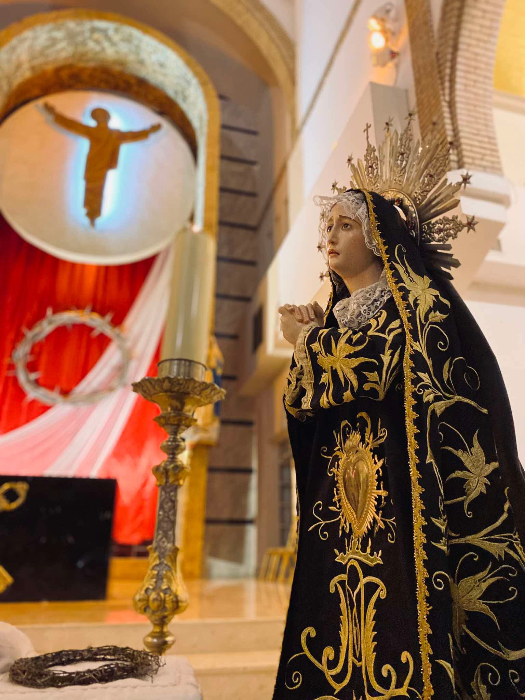
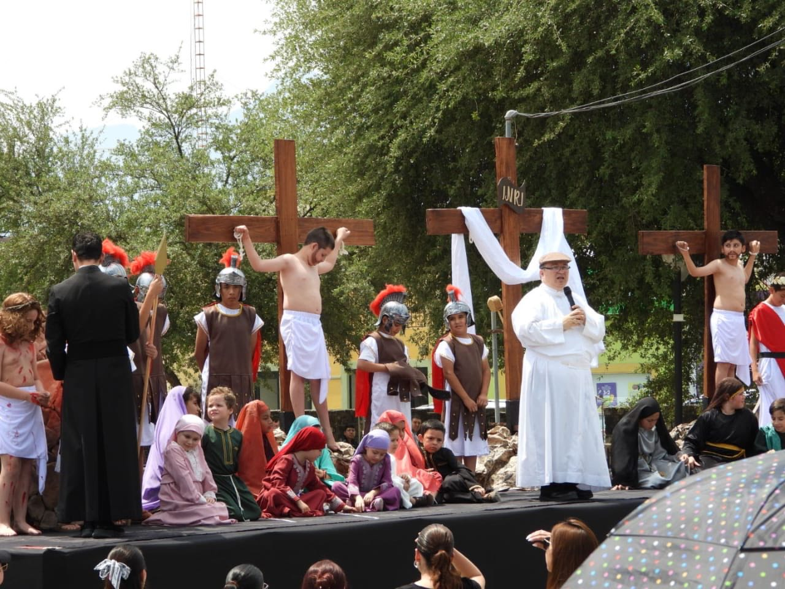
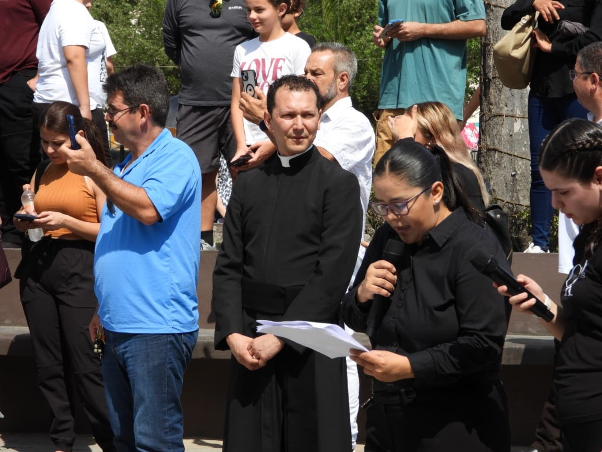
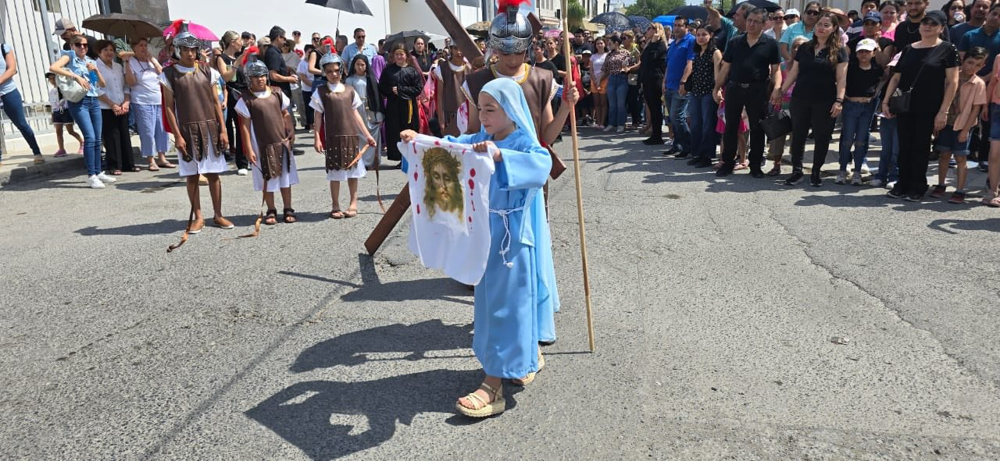
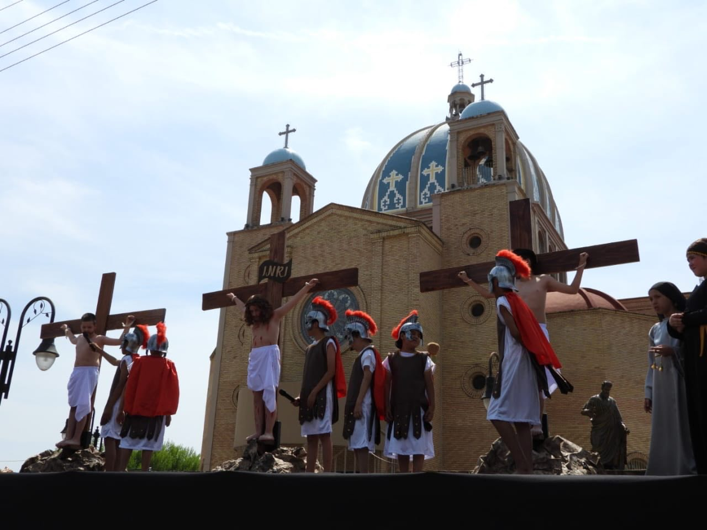
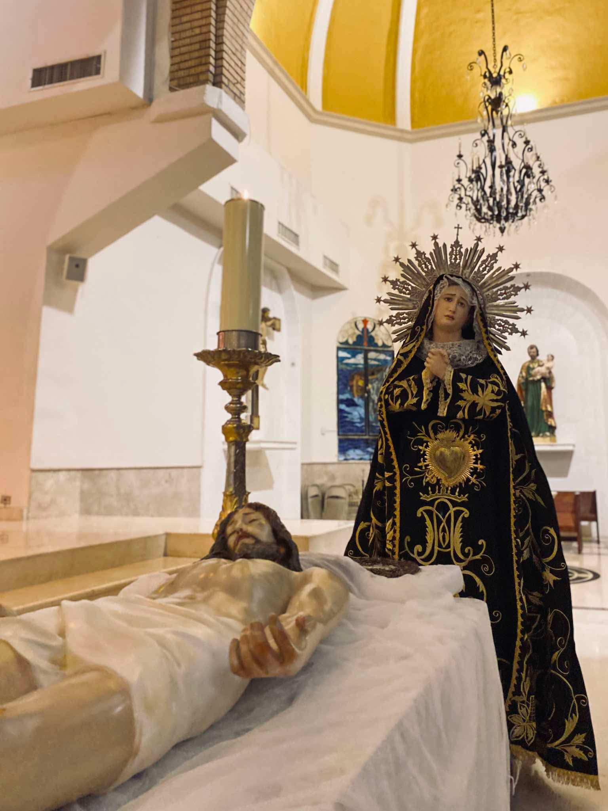

La Pasión y Muerte del Señor
Hoy es el único día del año en que la Iglesia no celebra la Eucaristía (no hay consagración). Es una jornada de luto, ayuno y abstinencia. El altar permanece completamente desnudo. Conmemoramos el arresto, el juicio, la crucifixión y la muerte de Jesucristo. El centro de la liturgia es la proclamación de la Pasión según San Juan, la solemne Oración Universal y la adoración de la Santa Cruz.
Parroquia San Pedro (Allende)
Capilla San Judas Tadeo
Selecciona tu área para ver protocolos y registro del Viernes Santo.

Textos íntegros de la Pasión según san Juan y la solemne Oración Universal.

Distribución de la Comunión utilizando la reserva eucarística del Jueves Santo.

Asistencia en la postración inicial, Adoración de la Cruz y Procesión del Silencio.

Proclamación a tres voces de la Pasión y lectura de las Siete Palabras.

Cantos a capella, austeridad instrumental y cantos para la Adoración de la Cruz.

Organización de las filas para adorar la Cruz y logística del Viacrucis.

Manejo del altar desnudo, preparación de la Santa Cruz y andas para la procesión.